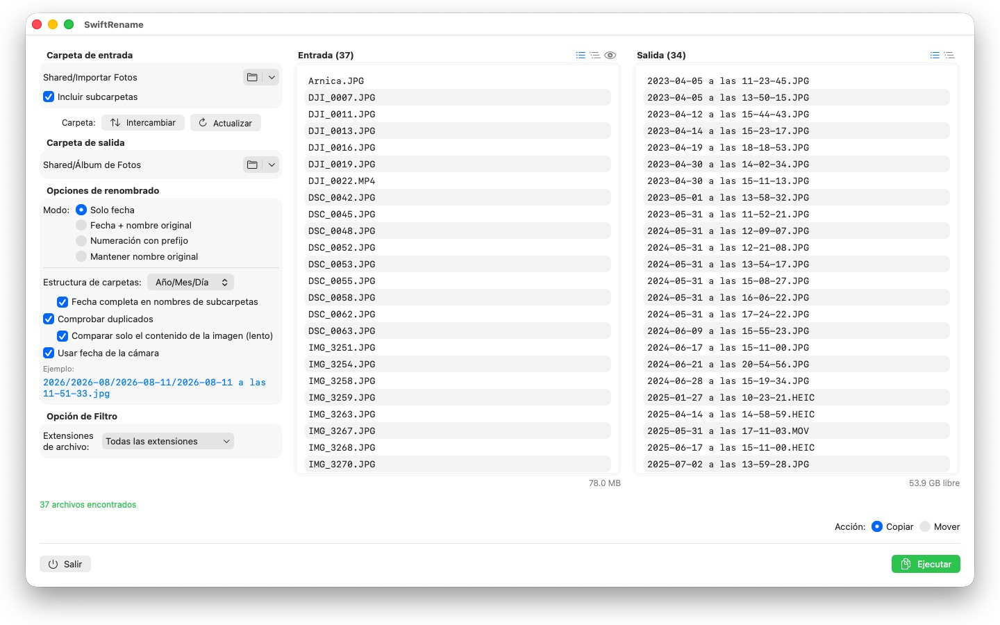
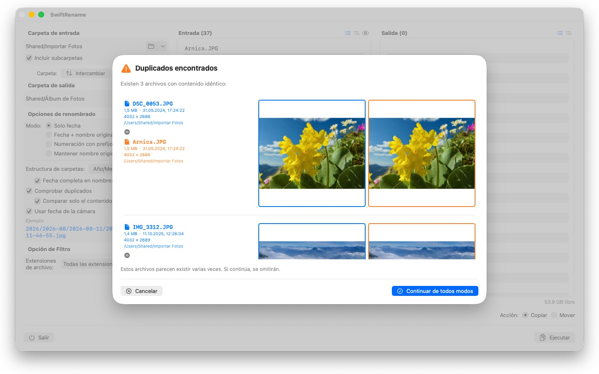

Renombra cientos de fotos y archivos de una vez: por fecha de cámara, numerados o en carpetas por año y mes. Los duplicados se detectan automáticamente.



SwiftRename es una potente herramienta para renombrar, copiar y mover archivos por lotes en tu Mac. Elige una carpeta, decide cómo deben verse los nuevos nombres, comprueba la previsualización en directo… y ejecuta.
24 idiomas: Deutsch · English · Español · Français · Italiano · Nederlands · Português · Svenska · Norsk · Suomi · Polski · Čeština · Hrvatski · Magyar · Română · Türkçe · Русский · Українська · فارسی · ไทย · 日本語 · 한국어 · 简体中文 · 繁體中文
MODOS DE RENOMBRADO
- Solo fecha: nombra los archivos por su fecha (p. ej., 2024-01-15 a las 14-30-00)
- Fecha + nombre original: antepone la fecha y conserva el nombre original
- Numeración con prefijo: numeración secuencial con tu propio prefijo (p. ej., Viaje_0001)
- Mantener nombre original: deja los nombres intactos y solo ordena los archivos en carpetas
ESTRUCTURA DE CARPETAS
Ordena los archivos automáticamente en carpetas por año, mes o día — si lo prefieres, con la fecha completa en nombres de subcarpetas (p. ej., 2026/2026-02/2026-02-20). Los archivos que abarcan varias décadas reciben además carpetas de década. O elige «Conservar» para reflejar la jerarquía de subcarpetas de la carpeta de origen en el destino.
FECHA DE LA CÁMARA
Las fotos y los vídeos se nombran según el momento en que realmente se tomaron: SwiftRename lee la fecha de la cámara (EXIF), tanto de los formatos RAW de todos los grandes fabricantes de cámaras (Canon, Nikon, Sony, Fujifilm y muchos más) como de HEIC, JPEG, PNG, TIFF y los formatos de vídeo habituales. Si un archivo no tiene fecha de la cámara, se usa su fecha de creación.
DETECCIÓN DE DUPLICADOS
Los duplicados se detectan por tamaño y contenido del archivo, independientemente de la fecha de creación, de modo que la misma foto con otra marca de tiempo no puede colarse. Una comparación de imágenes opcional encuentra incluso fotos que otras apps han vuelto a guardar. Las miniaturas de previsualización te permiten comparar ambos archivos lado a lado; los duplicados se omiten automáticamente.
MÁS FUNCIONES
- Copia o mueve con un clic, incluido el renombrado in situ dentro de la misma carpeta
- Acceso rápido a las carpetas de origen y destino usadas recientemente
- Incluye subcarpetas; muestra las listas de archivos en formato plano o como árbol de carpetas
- Filtra extensiones de archivo con selección múltiple
- Previsualización en directo de los nuevos nombres antes de tocar nada
- Deshacer y rehacer operaciones completas (Cmd+Z)
- Indicador de progreso con nombre de archivo y porcentaje; cancela en cualquier momento
- El espacio libre en disco se comprueba antes de iniciar la operación
- Arrastra y suelta carpetas directamente desde el Finder
Todo se queda en tu Mac. Sin conexiones de red, sin cuentas, sin recopilación de datos.
- Requiere macOS 12 o posterior
- 24 idiomas
- Soporte: SwiftAppsBavaria@gmx.net
Más apps
sCollect
Organizar música, películas, audiolibros, libros electrónicos y otras colecciones en una biblioteca multimedia.
sCollectPlay
El reproductor para la biblioteca multimedia: reproducir música, películas, audiolibros y pódcasts simplemente desde una carpeta, un XML de iTunes o una biblioteca de sCollect, sin cambiar nada en las etiquetas de los archivos.
sName2Date
Escribir la fecha del nombre de archivo como fecha de captura en fotos, vídeos y grabaciones de audio, para que un archivo como IMG_20240115_103000.jpg se ordene correctamente en cualquier gestor de fotos.
sName2Date Lite
La edición para un archivo por pasada: escribir la fecha del nombre de archivo como fecha de captura en una foto, un vídeo o una grabación de audio, ajustarla a mano, pasar el nombre a la notación ISO y deshacerlo todo con ⌘Z; las mismas capacidades que sName2Date, solo que sin carpetas enteras.
sVectorLift
Abrir, ver y guardar clipart vectorial antiguo como SVG: CorelDRAW, Windows Metafile y CGM.
sCollectPlay Lite
La edición ligera de sCollectPlay: simplemente abrir una carpeta, un XML de iTunes o una biblioteca de sCollect y reproducir desde ahí música, películas, audiolibros y pódcasts, con listas de reproducción, pistas de audio y de subtítulos, cámara lenta y avance fotograma a fotograma. Una fuente por sesión; el navegador de columnas, las listas de reproducción propias y las fuentes usadas recientemente quedan reservados a la versión completa.
sBikeBridge
Analizar salidas en bicicleta sin subirlas a un portal: importar archivos FIT de cualquier ciclocomputador que grabe en este formato, además de GPX y TCX. Las salidas se guardan en una biblioteca propia en el Mac, con mapa, potencia y frecuencia cardiaca, fotos y notas; la importación detecta los duplicados. Las estadísticas por año o por mes y los filtros por distancia, desnivel y duración permiten comparar las salidas. Si se desea, el mapa también está disponible sin conexión.